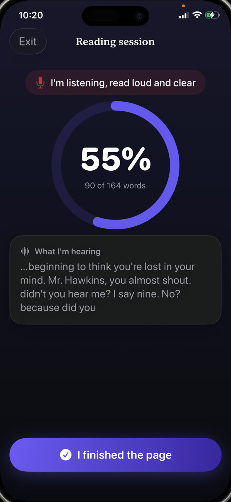

It matters because it is the bridge between decoding and comprehension. A child spending all their attention on sounding out words has none left for the meaning of the sentence. The exercise that builds it is simple, old and slightly unfashionable: reading out loud, most days, for about ten minutes.


The three parts of fluency
- Accuracy. Reading the words that are actually on the page, not the ones the shape suggests.
- Rate. A conversational pace. Too slow breaks the sentence apart; racing usually means comprehension has been dropped.
- Prosody. Expression and phrasing: pausing at commas, lifting for a question, giving a character a voice. This is the part that proves understanding.
Why out loud, and why to you
Silent reading hides everything. A child can move their eyes across a page for ten minutes and absorb nothing, and neither of you would know.
Reading aloud makes the process audible. You hear the words they skip, the ones they guess from the first letter, the places where the sentence falls apart. It is also the only version where a mistake can be caught in the moment it happens.
The ten minute routine
- Pick a book slightly below their frustration level. Fluency practice needs a text they can mostly read, not one that fights them.
- Set a timer for ten minutes so the end is defined and non-negotiable.
- Have them read out loud. Sit close enough to hear, and resist filling silences.
- Note mistakes without interrupting mid-sentence unless the meaning is lost.
- At the end, ask one real question about what happened. One. Not a quiz.
How to correct without killing it
The instinct is to jump on every error. Do not. Constant correction turns reading into a performance being marked, and children opt out of things they are being marked on.
Wait for the end of the sentence. If the meaning survived the mistake, let it go. If it did not, say the word and move on without an explanation. Explanations are for later, and mostly for the ones that repeat.
Tracking progress without a stopwatch
Words per minute is what schools measure, and it is a poor thing to chase at home; children who are timed learn to race. What you want to see over weeks is smoother phrasing, fewer stumbles on the same words, and more expression.
A simple record of what was read and when is enough. It tells you whether the practice is actually happening, which is the variable that matters most.
Practice that keeps its own record
Guardian Reader listens while your child reads the scanned pages out loud and compares what it hears against their exact text, giving a live match percentage as they go. The pass mark is adjustable, so a child learning to read is not held to a teenager's standard.
Every session is saved with the date, the minutes, the pages and the words that were actually read, which becomes an honest picture of practice over the school year, without anyone filling in a chart.
Reading unlocks the screen.
Free to download · No accounts, no tracking
Get Guardian Reader for iPhone